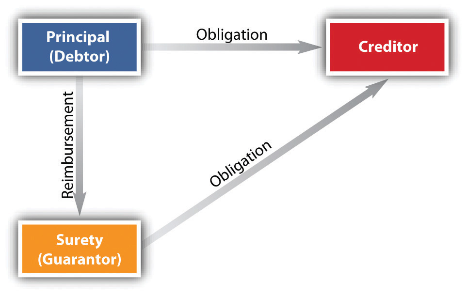

Suretyship is the second of the three major types of consensual security arrangements noted at the beginning of this chapter (personal property security, suretyship, real property security)—and a common one. Creditors frequently ask the owners of small, closely held companies to guarantee their loans to the company, and parent corporations also frequently are guarantors of their subsidiaries’ debts. The earliest sureties were friends or relatives of the principal debtor who agreed—for free—to lend their guarantee. Today most sureties in commercial transaction are insurance companies (but insurance is not the same as suretyship).
A suretyOne who promises to act or pay upon the default of another: a guarantor. is one who promises to pay or perform an obligation owed by the principal debtorThe person whose debt is guaranteed by a surety., and, strictly speaking, the surety is primarily liable on the debt: the creditor can demand payment from the surety when the debt is due. The creditor is the person to whom the principal debtor (and the surety, strictly speaking) owes an obligation. Very frequently, the creditor requires first that the debtor put up collateral to secure indebtedness, and—in addition—that the debtor engage a surety to make extra certain the creditor is paid or performance is made. For example, David Debtor wants Bank to loan his corporation, David Debtor, Inc., $100,000. Bank says, “Okay, Mr. Debtor, we’ll loan the corporation money, but we want its computer equipment as security, and we want you personally to guarantee the debt if the corporation can’t pay.” Sometimes, though, the surety and the principal debtor may have no agreement between each other; the surety might have struck a deal with the creditor to act as surety without the consent or knowledge of the principal debtor.
A guarantorOne who promises to pay or perform a contract obligation upon the default of another; a surety. also is one who guarantees an obligation of another, and for practical purposes, therefore, guarantor is usually synonymous with surety—the terms are used pretty much interchangeably. But here’s the technical difference: a surety is usually a party to the original contract and signs her (or his, or its) name to the original agreement along with the surety; the consideration for the principal’s contract is the same as the surety’s consideration—she is bound on the contract from the very start, and she is also expected to know of the principal debtor’s default so that the creditor’s failure to inform her of it does not discharge her of any liability. On the other hand, a guarantor usually does not make his agreement with the creditor at the same time the principal debtor does: it’s a separate contract requiring separate consideration, and if the guarantor is not informed of the principal debtor’s default, the guarantor can claim discharge on the obligation to the extent any failure to inform him prejudices him. But, again, as the terms are mostly synonymous, surety is used here to encompass both.
Figure 33.6 Defenses of Principal Debtor and Surety
Where there is an interest, public or private, that requires protection from the possibility of a default, sureties are engaged. For example, a landlord might require that a commercial tenant not only put up a security deposit but also show evidence that it has a surety on line ready to stand for three months’ rent if the tenant defaults. Often, a municipal government will want its road contractor to show it has a surety available in case, for some reason, the contractor cannot complete the project. Many states require general contractors to have bonds, purchased from insurance companies, as a condition of getting a contractor’s license; the insurance company is the surety—it will pay out if the contractor fails to complete work on the client’s house. These are types of a performance bondA surety bond that ensures a property owner (as a developer or municipality) of the completion of a construction contract or payment of actual damages to the extent of the bond in the event that the contractor fails to complete it.. A judge will often require that a criminal defendant put up a bond guaranteeing his appearance in court—that’s a type of suretyship where the bail-bonder is the surety—or that a plaintiff put up a bond indemnifying the defendant for the costs of delays caused by the lawsuit—a judicial bondA bond filed with the court as a guarantee. For example, a party to a court action may post a judicial bond to guarantee payment of a verdict while an appeal is being considered.. A bank will take out a bond on its employees in case they steal money from the bank—the bank teller, in this case, is the principal debtor (a fidelity bondAn assurance, generally purchased by an employer, to cover employees who are entrusted with valuable property or funds.). However, as we will see, sureties do not anticipate financial loss like insurance companies do: the surety expects, mostly, to be repaid if it has to perform. The principal debtor goes to an insurance company and buys the bond—the suretyship policy. The cost of the premium depends on the surety company, the type of bond applied for, and the applicant’s financial history. A sound estimate of premium costs is 1 percent to 4 percent, but if a surety company classifies an applicant as high risk, the premium falls between 5 percent and 20 percent of the bond amount. When the purchaser of real estate agrees to assume the seller’s mortgage (promises to pay the mortgage debt), the seller then becomes a surety: unless the mortgagee releases the seller (not likely), the seller has to pay if the buyer defaults.
Suretyship can arise only through contract. The general principles of contract law apply to suretyship. Thus a person with the general capacity to contract has the power to become a surety. Consideration is required for a suretyship contract: if Debtor asks a friend to act as a surety to induce Creditor to make Debtor a loan, the consideration Debtor gives Creditor also acts as the consideration Friend gives. Where the suretyship arises after Creditor has already extended credit, new consideration would be required (absent application of the doctrine of promissory estoppelAmerican Druggists’ Ins. Co. v. Shoppe, 448 N.W.2d 103, Minn. App. (1989).). You may recall from the chapters on contracts that the promise by one person to pay or perform for the debts or defaults of another must be evidenced by a writing under the statute of frauds (subject to the “main purpose” exception).
Suretyship contracts are affected to some extent by government regulation. Under a 1985 Federal Trade Commission Credit Practices Rule, creditors are prohibited from misrepresenting a surety’s liability. Creditors must also give the surety a notice that explains the nature of the obligation and the potential liability that can arise if a person cosigns on another’s debt.Here is an example of the required notice: Federal Trade Commission, “Facts for Consumers: The Credit Practices Rule,” http://www.ftc.gov/bcp/edu/pubs/consumer/credit/cre12.shtm.
Upon the principal debtor’s default, the surety is contractually obligated to perform unless the principal herself or someone on her behalf discharges the obligation. When the surety performs, it must do so in good faith. Because the principal debtor’s defenses are generally limited, and because—as will be noted—the surety has the right to be reimbursed by the debtor, debtors not infrequently claim the surety acted in bad faith by doing things like failing to make an adequate investigation (to determine if the debtor really defaulted), overpaying claims, interfering with the contact between the surety and the debtor, and making unreasonable refusals to let the debtor complete the project. The case Fidelity and Deposit Co. of Maryland v. Douglas Asphalt Co., in Section 33.5 "Cases", is typical.
The surety has four main rights stemming from its obligation to answer for the debt or default of the principal debtor.
If, at the time a surety’s obligation has matured, the principal can satisfy the obligation but refuses to do so, the surety is entitled to exonerationRelieving of liability.—a court order requiring the principal to perform. It would be inequitable to force the surety to perform and then to have to seek reimbursementThe right of a surety to be repaid by the principal debtor. from the principal if all along the principal is able to perform.
If the surety must pay the creditor because the principal has defaulted, the principal is obligated to reimburse the surety. The amount required to be reimbursed includes the surety’s reasonable, good-faith outlays, including interest and legal fees.
Suppose the principal’s duty to the creditor is fully satisfied and that the surety has contributed to this satisfaction. Then the surety is entitled to be subrogated to the rights of the creditor against the principal. In other words, the surety stands in the creditor’s shoes and may assert against the principal whatever rights the creditor could have asserted had the duty not been discharged. The right of subrogationSubstitution of one person for another who has a legal claim or right. includes the right to take secured interests that the creditor obtained from the principal to cover the duty. Sarah’s Pizzeria owes Martha $5,000, and Martha has taken a security interest in Sarah’s Chevrolet. Eva is surety for the debt. Sarah defaults, and Eva pays Martha the $5,000. Eva is entitled to have the security interest in the car transferred to her.
Two or more sureties who are bound to answer for the principal’s default and who should share between them the loss caused by the default are known as cosuretiesAn arrangement where two or more surety companies directly participate on a bond.. A surety who in performing its own obligation to the creditor winds up paying more than its proportionate share is entitled to contributionThe sharing of a loss or payment by two or more persons or sureties. from the cosureties.
The principal and the surety may have defenses to paying.
The principal debtor may avail itself of any standard contract defenses as against the creditor, including impossibility, illegality, incapacity, fraud, duress, insolvency, or bankruptcy discharge. However, the surety may contract with the creditor to be liable despite the principal’s defenses, and a surety who has undertaken the suretyship with knowledge of the creditor’s fraud or duress remains obligated, even though the principal debtor will be discharged. When the surety turns to the principal debtor and demands reimbursement, the latter may have defenses against the surety—as noted—for acting in bad faith.
One of the main reasons creditors want the promise of a surety is to avoid the risk that the principal debtor will go bankrupt: the debtor’s bankruptcy is a defense to the debtor’s liability, certainly, but that defense cannot be used by the surety. The same is true of the debtor’s incapacity: it is a defense available to the principal debtor but not to the surety.
Generally, the surety may exercise defenses on a contract that would have been available to the principal debtor (e.g., creditor’s breach; impossibility or illegality of performance; fraud, duress, or misrepresentation by creditor; statute of limitations; refusal of creditor to accept tender or performance from either debtor or surety.) Beyond that, the surety has some defenses of its own. Common defenses raised by sureties include the following:
The following are defenses of principal debtor only:
The following are defenses of both principal debtor and surety:
The following are defenses of surety only:
Fraud or duress by creditor on surety
Acts of creditor or debtor materially affecting surety’s obligations:
Creditors often require not only the security of collateral from the debtor but also that the debtor engage a surety. A contract of suretyship is a type of insurance policy, where the surety (insurance company) promises the creditor that if the principal debtor fails to perform, the surety will undertake good-faith performance instead. A difference between insurance and suretyship, though, is that the surety is entitled to reimbursement by the principal debtor if the surety pays out. The surety is also entitled, where appropriate, to exoneration, subrogation, and contribution. The principal debtor and the surety both have some defenses available: some are personal to the debtor, some are joint defenses, and some are personal to the surety.